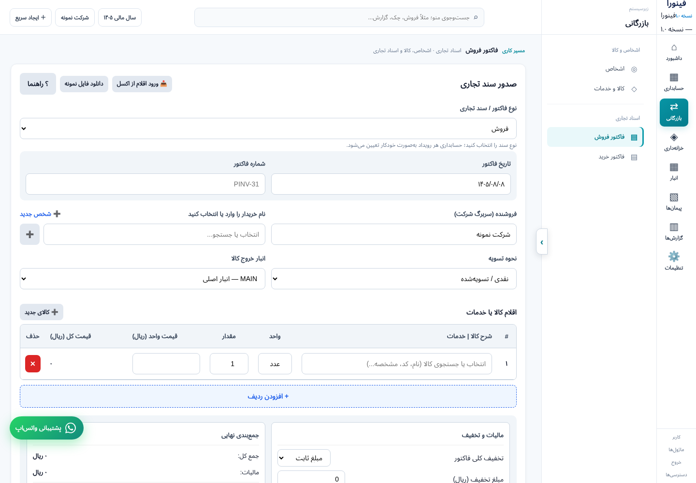
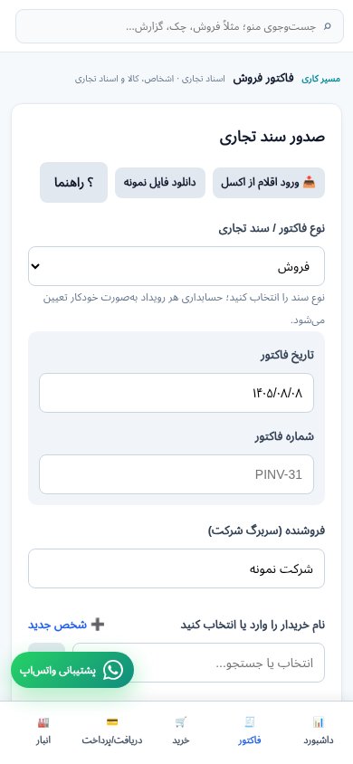
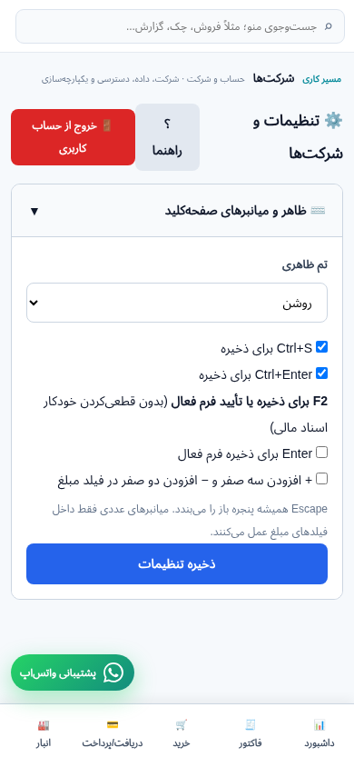

مبنای نسخه:357cfb2 · دادهٔ مصنوعی · تمام درخواستهای بیرونی مسدود.
۲۰۳ آزمون مرورگر و۴۹ آزمون سرور موفق؛۷۶ مسیر منو به مقصد رسیدهاند (۵۰ مسیر از نوار،۲۶ با آمادهسازی مستقیم ماژول).
CLICK_EXECUTED فقط یعنی کلیک اجرا شد و خطای JS ثبت نشد؛ درستبودن ذخیرهٔ سرور یا نتیجهٔ مالی از آن نتیجه نمیشود. HIDDEN_OR_DISABLED یعنی پیششرط نمایش یا فعالشدن در این fixture فراهم نیست، نه خرابی اثباتشده.
{"HIDDEN_OR_DISABLED": 93, "CLICK_EXECUTED": 128}
گزارش و محدودیتها · مقایسهٔ رقبا · فهرست کامل منبع CSVفیلتر:
| # | صفحه | کنترل | نتیجه | handler | خطا/جزئیات |
|---|---|---|---|---|---|
| 1 | shell | فراموشی رمز عبور | HIDDEN_OR_DISABLED | finoraRequestPasswordRecovery() | |
| 2 | shell | ورود با رمز | HIDDEN_OR_DISABLED | handleLogin() | |
| 3 | shell | Gادامه با Google | HIDDEN_OR_DISABLED | signInWithGoogle() | |
| 4 | shell | ورود با کد ایمیل | HIDDEN_OR_DISABLED | startEmailOtp(false,false) | |
| 5 | shell | تأیید کد | HIDDEN_OR_DISABLED | verifyEmailOtp() | |
| 6 | shell | بررسی اتصال به سرور ورود | HIDDEN_OR_DISABLED | checkAuthConnectivity() | |
| 7 | shell | ارسال دوباره | HIDDEN_OR_DISABLED | startEmailOtp(true) | |
| 8 | shell | ثبتنام با کد ایمیل | HIDDEN_OR_DISABLED | startEmailOtp(false,true) | |
| 9 | shell | فعلاً بدون رمز ادامه بده | HIDDEN_OR_DISABLED | skipSetPassword() | |
| 10 | shell | ذخیره رمز جدید و ورود | HIDDEN_OR_DISABLED | finoraSaveRecoveredPassword() | |
| 11 | shell | بازگشت | HIDDEN_OR_DISABLED | backToAuthMain() | |
| 12 | shell | ذخیره رمز و ورود | HIDDEN_OR_DISABLED | saveNewPassword() | |
| 13 | shell | بازگشت به ورود | HIDDEN_OR_DISABLED | finoraCancelPasswordRecovery() | |
| 14 | shell | ⇄ بازرگانی | CLICK_EXECUTED | openModule('commerce','view-invoices') | |
| 15 | shell | ⌂ داشبورد | CLICK_EXECUTED | openModule('dashboard','view-dashboard','overview') | |
| 16 | shell | ▦ حسابداری | CLICK_EXECUTED | openModule('accounting','view-accounting-foundation','accounts') | |
| 17 | shell | ▧ پیمانها | CLICK_EXECUTED | openModule('projects','view-contracting') | |
| 18 | shell | ▦ انبار | CLICK_EXECUTED | openModule('inventory','view-inventory','stock') | |
| 19 | shell | ◈ خزانهداری | CLICK_EXECUTED | openModule('treasury','view-payments') | |
| 20 | shell | ▥ گزارشها | CLICK_EXECUTED | openModule('reports','view-reports') | |
| 21 | shell | ⚙ تنظیمات | CLICK_EXECUTED | openModule('settings','view-settings') | |
| 22 | shell | ⌂ داشبورد | CLICK_EXECUTED | navigateShell('dashboard','view-dashboard','overview') | |
| 23 | shell | ماژولها | CLICK_EXECUTED | showModuleLauncher(true) | |
| 24 | shell | خروج | CLICK_EXECUTED | handleLogout() | |
| 25 | shell | › | CLICK_EXECUTED | toggleModulePanel() | |
| 26 | shell | سال مالی ۱۴۰۵ | CLICK_EXECUTED | navigateShell('accounting','view-accounting-foundation','fiscal') | |
| 27 | shell | شرکت نمونه | CLICK_EXECUTED | navigateShell('settings','view-settings','company') | |
| 28 | shell | ＋ ایجاد سریع | CLICK_EXECUTED | toggleQuickCreateMenu(event) | |
| 29 | shell | سند حسابداری | HIDDEN_OR_DISABLED | navigateShell('accounting','view-journal','new');closeQuickCreateMenu() | |
| 30 | shell | فاکتور خرید | HIDDEN_OR_DISABLED | navigateShell('commerce','view-purchases');closeQuickCreateMenu() | |
| 31 | shell | فاکتور فروش | HIDDEN_OR_DISABLED | navigateShell('commerce','view-invoices');closeQuickCreateMenu() | |
| 32 | shell | دریافت / پرداخت | HIDDEN_OR_DISABLED | navigateShell('treasury','view-payments');closeQuickCreateMenu() | |
| 33 | shell | طرف حساب | HIDDEN_OR_DISABLED | navigateShell('commerce','view-contacts');closeQuickCreateMenu() | |
| 34 | shell | کالا / خدمت | HIDDEN_OR_DISABLED | navigateShell('commerce','view-products');closeQuickCreateMenu() | |
| 35 | view-dashboard | ＋ سند حسابداری | CLICK_EXECUTED | navigateShell('accounting','view-journal','new') | |
| 36 | view-dashboard | ＋ فاکتور فروش | CLICK_EXECUTED | startNewInvoice() | |
| 37 | view-dashboard | ▦ کدینگ حسابها | CLICK_EXECUTED | navigateShell('accounting','view-accounting-foundation','accounts') | |
| 38 | view-dashboard | ⌘ تفصیلیهای شناور | CLICK_EXECUTED | navigateShell('accounting','view-accounting-foundation','dimensions') | |
| 39 | view-dashboard | ▥ تراز آزمایشی | CLICK_EXECUTED | navigateShell('accounting','view-accounting-reports','trial') | |
| 40 | view-dashboard | ▤ دفاتر حسابداری | CLICK_EXECUTED | navigateShell('accounting','view-accounting-reports','ledger') | |
| 41 | view-dashboard | ↔ گردش حساب | CLICK_EXECUTED | navigateShell('treasury','view-payments') | |
| 42 | view-dashboard | ⇅ پشتیبان و داده | CLICK_EXECUTED | navigateShell('settings','view-data-center','data-backup') | |
| 43 | view-dashboard | همه اسناد | CLICK_EXECUTED | navigateShell('accounting','view-journal','register') | |
| 44 | view-invoices | ؟ راهنما | CLICK_EXECUTED | finoraShowGuide('invoices') | |
| 45 | view-invoices | ✕ | HIDDEN_OR_DISABLED | document.getElementById('item_1793388064705_7o9b').remove();updateInvoiceItemRowNumbers();recomputeTotals() | |
| 46 | view-invoices | انصراف از ویرایش | HIDDEN_OR_DISABLED | cancelInvoiceEdit() | |
| 47 | view-invoices | ➕ | CLICK_EXECUTED | openQuickContactModal() | |
| 48 | view-invoices | ➕ کالای جدید | CLICK_EXECUTED | openQuickProductModal() | |
| 49 | view-invoices | 💾 ثبت فاکتور | CLICK_EXECUTED | commitSaveInvoice() | |
| 50 | view-invoices | + افزودن ردیف | CLICK_EXECUTED | addInvoiceItemRow() | |
| 51 | view-products | ؟ راهنما | CLICK_EXECUTED | finoraShowGuide('products') | |
| 52 | view-products | 📄 نمونه اکسل | CLICK_EXECUTED | downloadProductsExcelTemplate() | |
| 53 | view-products | انصراف از اصلاح | HIDDEN_OR_DISABLED | cancelProductEdit() | |
| 54 | view-contacts | ➕ ثبت طرف حساب | CLICK_EXECUTED | commitSaveContact() | |
| 55 | view-products | ➕ ثبت کالا | CLICK_EXECUTED | commitSaveProduct() | |
| 56 | view-contacts | 📄 نمونه اکسل | CLICK_EXECUTED | downloadContactsExcelTemplate() | |
| 57 | view-cheques | ➕ ثبت چک | CLICK_EXECUTED | commitSaveCheque() | |
| 58 | view-expenses | ➕ ثبت سند | CLICK_EXECUTED | commitSaveExpense() | |
| 59 | view-contacts | انصراف از اصلاح | HIDDEN_OR_DISABLED | cancelContactEdit() | |
| 60 | view-cheques | انصراف از اصلاح | HIDDEN_OR_DISABLED | cancelChequeEdit() | |
| 61 | view-contracting | ثبت قرارداد | CLICK_EXECUTED | p4SaveContract() | |
| 62 | view-expenses | انصراف از اصلاح | HIDDEN_OR_DISABLED | cancelExpenseEdit() | |
| 63 | view-payments | ثبت دریافت / پرداخت | CLICK_EXECUTED | commitSavePayment() | |
| 64 | view-payments | انصراف | HIDDEN_OR_DISABLED | resetPaymentForm() | |
| 65 | view-settings | ذخیره تنظیمات | HIDDEN_OR_DISABLED | finoraSaveExperienceSettings() | |
| 66 | view-data-center | ریست دادههای شرکت فعال | CLICK_EXECUTED | finoraFactoryResetSelectedCompany() | |
| 67 | view-contracting | افزودن کسور | CLICK_EXECUTED | p4AddDeduction(document.getElementById('p4-tools-contract').value) | |
| 68 | view-contracting | ثبت تضمین | CLICK_EXECUTED | p4AddGuarantee(document.getElementById('p4-tools-contract').value) | |
| 69 | view-settings | 💾 ذخیره رمز عبور | HIDDEN_OR_DISABLED | changeAccountPassword() | |
| 70 | view-settings | انصراف از اصلاح | HIDDEN_OR_DISABLED | cancelCompanyEdit() | |
| 71 | view-settings | ➕ ثبت شرکت جدید | HIDDEN_OR_DISABLED | commitSaveCompany() | |
| 72 | view-settings | ✏️ اصلاح | CLICK_EXECUTED | editCompanyFromButton(this) | |
| 73 | view-settings | ذخیره پیشفرضها | HIDDEN_OR_DISABLED | commitSaveDefaultSettings() | |
| 74 | view-settings | گزارش باگ | HIDDEN_OR_DISABLED | alert('پشتیبانی فعال است.') | |
| 75 | view-settings | 📥 دانلود فایل پشتیبان (JSON) | HIDDEN_OR_DISABLED | exportDataBlob() | |
| 76 | view-settings | بررسی آپدیت | HIDDEN_OR_DISABLED | alert('آخرین نگارش نصب است.') | |
| 77 | view-settings | خروجی دادههای فعلی | HIDDEN_OR_DISABLED | finoraExportConfiguredData(document.getElementById('finora-excel-type').value) | |
| 78 | view-settings | دانلود قالب نمونه | HIDDEN_OR_DISABLED | finoraDownloadConfiguredTemplate(document.getElementById('finora-excel-type').value) | |
| 79 | view-settings | ذخیره فیلدها | HIDDEN_OR_DISABLED | finoraSaveExcelFields() | |
| 80 | view-settings | بهروزرسانی آمار | HIDDEN_OR_DISABLED | finoraRefreshDataStats() | |
| 81 | view-purchases | + افزودن ردیف | CLICK_EXECUTED | purAddRow() | |
| 82 | view-admin | 🔄 تازهسازی لیست | CLICK_EXECUTED | refreshAdminPanel() | |
| 83 | view-purchases | ✕ | CLICK_EXECUTED | this.closest('tr').remove();purRecalc() | |
| 84 | view-admin | ＋ ایجاد کاربر جدید | CLICK_EXECUTED | adminOpenCreateUser() | |
| 85 | view-purchases | انصراف از اصلاح | HIDDEN_OR_DISABLED | purCancelEdit() | |
| 86 | view-accounting-foundation | پیشنمایش تکمیل کدینگ | CLICK_EXECUTED | afPreviewChartUpgrade() | |
| 87 | view-purchases | 💾 ثبت فاکتور خرید | CLICK_EXECUTED | purSave() | |
| 88 | view-accounting-foundation | نمونه Excel کدینگ | CLICK_EXECUTED | downloadAccountsExcelTemplate() | |
| 89 | view-accounting-foundation | ثبت قاعده | HIDDEN_OR_DISABLED | afSaveRule() | |
| 90 | view-accounting-foundation | ثبت حساب | CLICK_EXECUTED | afSaveAccount() | |
| 91 | view-accounting-foundation | ؟ راهنمای تخصصی | HIDDEN_OR_DISABLED | finoraShowGuide('dimensions') | |
| 92 | view-accounting-foundation | انصراف از اصلاح | HIDDEN_OR_DISABLED | afCancelAccountEdit() | |
| 93 | view-accounting-foundation | حذف | HIDDEN_OR_DISABLED | afDeleteDimension('DIM_mvvcy75w_ndzbz') | |
| 94 | view-accounting-foundation | حذف | HIDDEN_OR_DISABLED | afDeleteDimension('DIM_mvvcy75w_iqj87') | |
| 95 | view-accounting-foundation | ثبت تفصیلی | HIDDEN_OR_DISABLED | afSaveDimension() | |
| 96 | view-accounting-foundation | حذف | HIDDEN_OR_DISABLED | afDeleteDimension('DIM_mvvcy75w_3c43j') | |
| 97 | view-accounting-foundation | ثبت | HIDDEN_OR_DISABLED | afSaveFiscal() | |
| 98 | view-accounting-foundation | ثبت مقدار | HIDDEN_OR_DISABLED | afSaveDimensionValue() | |
| 99 | view-accounting-foundation | حذف | HIDDEN_OR_DISABLED | afDeleteDimension('DIM_mvvcy75w_qmq43') | |
| 100 | view-accounting-foundation | حذف | HIDDEN_OR_DISABLED | afDeleteDimension('DIM_mvvcy75w_mn8fm') | |
| 101 | view-accounting-foundation | قفل | HIDDEN_OR_DISABLED | afToggleFiscal('FY_mvvcy75x_e00yh') | |
| 102 | view-accounting-foundation | ثبت | HIDDEN_OR_DISABLED | afSaveBranch() | |
| 103 | view-journal | ＋ آرتیکل | CLICK_EXECUTED | jeAddRow() | |
| 104 | view-accounting-foundation | ثبت پروژه | HIDDEN_OR_DISABLED | afSaveProject() | |
| 105 | shell | ذخیره و ورود به محیط کار | HIDDEN_OR_DISABLED | saveUserOnboarding() | |
| 106 | view-journal | ثبت پیشنویس | CLICK_EXECUTED | jeSaveManual() | |
| 107 | shell | ذخیره و انتخاب | HIDDEN_OR_DISABLED | saveQuickContact() | |
| 108 | view-journal | انصراف از ویرایش | HIDDEN_OR_DISABLED | jeClearManualForm() | |
| 109 | shell | ایجاد حساب | HIDDEN_OR_DISABLED | adminCreateUser() | |
| 110 | shell | ذخیره و افزودن | HIDDEN_OR_DISABLED | saveQuickProduct() | |
| 111 | shell | انصراف | HIDDEN_OR_DISABLED | closeQuickProductModal() | |
| 112 | shell | انصراف | HIDDEN_OR_DISABLED | closeQuickContactModal() | |
| 113 | shell | بستن | HIDDEN_OR_DISABLED | adminClosePasswordReset() | |
| 114 | shell | بستن | HIDDEN_OR_DISABLED | adminCloseCreateUser() | |
| 115 | shell | ثبت رمز جدید | HIDDEN_OR_DISABLED | adminSetPassword() | |
| 116 | shell | تایید و اعمال لایسنس | HIDDEN_OR_DISABLED | applyLicenseDurationChange() | |
| 117 | shell | انصراف | HIDDEN_OR_DISABLED | closeLicenseEditModal() | |
| 118 | shell | ≡ قواعد حساب و تفصیلی | CLICK_EXECUTED | navigateShell('accounting','view-accounting-foundation','rules') | |
| 119 | shell | 💾 ذخیره اطلاعات سند | HIDDEN_OR_DISABLED | saveElectronicDocToPending() | |
| 120 | shell | انصراف | HIDDEN_OR_DISABLED | cancelElectronicDoc() | |
| 121 | shell | ⌂ شعب | CLICK_EXECUTED | navigateShell('accounting','view-accounting-foundation','branches') | |
| 122 | shell | ¤ ارز و نرخ تبدیل | CLICK_EXECUTED | navigateShell('accounting','view-currency','') | |
| 123 | shell | ◎ مراکز هزینه | CLICK_EXECUTED | navigateShell('accounting','view-data-center','cost-centers') | |
| 124 | shell | ✓ مدیریت اسناد | CLICK_EXECUTED | navigateShell('accounting','view-journal','documents') | |
| 125 | shell | ◫ صورتهای مالی | CLICK_EXECUTED | navigateShell('accounting','view-accounting-reports','financials') | |
| 126 | shell | ◷ سن مطالبات و بدهیها | CLICK_EXECUTED | navigateShell('accounting','view-accounting-reports','aging') | |
| 127 | shell | ◌ هزینه و درآمد | CLICK_EXECUTED | navigateShell('accounting','view-expenses','') | |
| 128 | shell | ↕ جریان وجوه نقد | CLICK_EXECUTED | navigateShell('accounting','view-accounting-reports','cashflow') | |
| 129 | view-data-center | ورود اکسل فاکتور فروش | HIDDEN_OR_DISABLED | switchView('view-invoices') | |
| 130 | view-data-center | ورود اکسل فاکتور خرید | HIDDEN_OR_DISABLED | switchView('view-purchases') | |
| 131 | view-data-center | ثبت مرکز هزینه | CLICK_EXECUTED | p5SaveCostCenter() | |
| 132 | view-data-center | ذخیره تنظیمات | HIDDEN_OR_DISABLED | p5SaveCompanyOpsSettings() | |
| 133 | view-currency | ثبت نرخ | CLICK_EXECUTED | p5SaveRate() | |
| 134 | view-data-center | دانلود پشتیبان کامل | HIDDEN_OR_DISABLED | p5ExportBackup() | |
| 135 | view-journal | ⧉ | CLICK_EXECUTED | jeCopyRow(this) | |
| 136 | view-currency | ثبت ارز | CLICK_EXECUTED | p5SaveCurrency() | |
| 137 | view-accounting-reports | اعمال فیلتر | CLICK_EXECUTED | P6Reports.render() | |
| 138 | shell | ◇ کالا و خدمات | CLICK_EXECUTED | navigateShell('commerce','view-products','') | |
| 139 | view-journal | × | CLICK_EXECUTED | jeRemoveRow(this) | |
| 140 | shell | ◎ اشخاص | CLICK_EXECUTED | navigateShell('commerce','view-contacts','') | |
| 141 | shell | ↔ دریافت و پرداخت | CLICK_EXECUTED | navigateShell('treasury','view-payments','') | |
| 142 | shell | ▤ فاکتور خرید | CLICK_EXECUTED | navigateShell('commerce','view-purchases','') | |
| 143 | shell | ◈ چکها و صیاد | CLICK_EXECUTED | navigateShell('treasury','view-cheques','') | |
| 144 | shell | ▤ فاکتور فروش | CLICK_EXECUTED | navigateShell('commerce','view-invoices','') | |
| 145 | shell | ↕ جریان وجوه نقد | CLICK_EXECUTED | navigateShell('treasury','view-accounting-reports','cashflow') | |
| 146 | shell | ▦ پیمانها و قراردادهای اجرایی | CLICK_EXECUTED | navigateShell('projects','view-contracting','') | |
| 147 | shell | ▧ پروژهها و کارگاهها | CLICK_EXECUTED | navigateShell('projects','view-accounting-foundation','projects') | |
| 148 | shell | ◷ سن مطالبات و بدهیها | CLICK_EXECUTED | navigateShell('treasury','view-accounting-reports','aging') | |
| 149 | shell | ✓ انبارگردانی | CLICK_EXECUTED | navigateShell('inventory','view-inventory','count') | |
| 150 | shell | ▥ گزارش پیمان و پروژه | CLICK_EXECUTED | navigateShell('projects','view-accounting-reports','projects') | |
| 151 | shell | ▦ تعریف انبار | CLICK_EXECUTED | navigateShell('inventory','view-inventory','warehouse') | |
| 152 | shell | ⇄ گردش انبار | CLICK_EXECUTED | navigateShell('inventory','view-inventory','movement') | |
| 153 | view-inventory | ثبت انبار | CLICK_EXECUTED | p5SaveWarehouse() | |
| 154 | shell | ▥ موجودی و بهای میانگین | CLICK_EXECUTED | navigateShell('inventory','view-inventory','stock') | |
| 155 | view-inventory | ثبت شمارش و تعدیل | HIDDEN_OR_DISABLED | p5SaveCount() | |
| 156 | view-inventory | ثبت قطعی گردش | HIDDEN_OR_DISABLED | p5PostMovement() | |
| 157 | shell | ▤ دفتر داراییها | CLICK_EXECUTED | navigateShell('assets','view-assets','asset-register') | |
| 158 | view-assets | ثبت دارایی | CLICK_EXECUTED | p5SaveAsset() | |
| 159 | shell | ◷ استهلاک و سوابق | CLICK_EXECUTED | navigateShell('assets','view-assets','depreciation') | |
| 160 | shell | ◆ ثبت دارایی | CLICK_EXECUTED | navigateShell('assets','view-assets','asset-new') | |
| 161 | shell | ▤ قرارداد کار و پایانکار | CLICK_EXECUTED | navigateShell('enterprise','view-enterprise','contracts') | |
| 162 | shell | ◷ مرخصی و ذخیره | CLICK_EXECUTED | navigateShell('enterprise','view-enterprise','leave') | |
| 163 | shell | ♙ کارکنان | CLICK_EXECUTED | navigateShell('enterprise','view-enterprise','employees') | |
| 164 | shell | ▥ حقوق، بیمه و مالیات | CLICK_EXECUTED | navigateShell('enterprise','view-enterprise','payroll') | |
| 165 | shell | ¤ صندوق و تعریف تنخواه | CLICK_EXECUTED | navigateShell('enterprise','view-enterprise','treasury') | |
| 166 | shell | ◌ تعهدات کارکنان | CLICK_EXECUTED | navigateShell('enterprise','view-enterprise','benefits') | |
| 167 | shell | ↔ عملیات تنخواه و تسویه | CLICK_EXECUTED | navigateShell('enterprise','view-enterprise','pettyops') | |
| 168 | shell | ◎ بودجه عملکرد و ABC | CLICK_EXECUTED | navigateShell('enterprise','view-enterprise','costing') | |
| 169 | view-enterprise | ثبت قرارداد | HIDDEN_OR_DISABLED | enterpriseSaveContract() | |
| 170 | view-enterprise | ثبت کارکن | CLICK_EXECUTED | enterpriseSaveEmployee() | |
| 171 | shell | ✓ رجیستری قوانین و استانداردها | CLICK_EXECUTED | navigateShell('enterprise','view-enterprise','compliance') | |
| 172 | shell | ▦ گروه، نقدینگی و فیمابین | CLICK_EXECUTED | navigateShell('enterprise','view-enterprise','group') | |
| 173 | view-enterprise | ثبت/محاسبه | HIDDEN_OR_DISABLED | enterpriseSaveLeave() | |
| 174 | view-enterprise | ثبت تعهد و سند | HIDDEN_OR_DISABLED | entAccrueBenefit() | |
| 175 | view-enterprise | ثبت صندوق | HIDDEN_OR_DISABLED | enterpriseSaveCashbox() | |
| 176 | view-enterprise | افزودن ردیف | HIDDEN_OR_DISABLED | entSavePayrollLine() | |
| 177 | view-enterprise | ثبت محرک | HIDDEN_OR_DISABLED | entSaveDriver() | |
| 178 | view-enterprise | ثبت قطعی و سند | HIDDEN_OR_DISABLED | entPostPetty() | |
| 179 | view-enterprise | ثبت بودجه | HIDDEN_OR_DISABLED | entSaveBudget() | |
| 180 | view-enterprise | ثبت تنخواه | HIDDEN_OR_DISABLED | enterpriseSavePetty() | |
| 181 | view-enterprise | تخصیص ABC | HIDDEN_OR_DISABLED | entAllocateABC() | |
| 182 | view-enterprise | ثبت | HIDDEN_OR_DISABLED | entSaveIntercompany() | |
| 183 | shell | ▥ تراز آزمایشی | CLICK_EXECUTED | navigateShell('reports','view-accounting-reports','trial') | |
| 184 | shell | ▥ گزارشهای عملیاتی | CLICK_EXECUTED | navigateShell('reports','view-reports','') | |
| 185 | shell | ▤ دفاتر حسابداری | CLICK_EXECUTED | navigateShell('reports','view-accounting-reports','ledger') | |
| 186 | shell | ◫ صورتهای مالی | CLICK_EXECUTED | navigateShell('reports','view-accounting-reports','financials') | |
| 187 | shell | ◷ سن مطالبات / بدهی | CLICK_EXECUTED | navigateShell('reports','view-accounting-reports','aging') | |
| 188 | shell | ↕ جریان وجوه نقد | CLICK_EXECUTED | navigateShell('reports','view-accounting-reports','cashflow') | |
| 189 | shell | ♙ حساب کاربری و رمز | CLICK_EXECUTED | navigateShell('settings','view-settings','account') | |
| 190 | shell | ▧ پروژه / پیمان | CLICK_EXECUTED | navigateShell('reports','view-accounting-reports','projects') | |
| 191 | shell | ◌ تنظیمات عملیاتی | CLICK_EXECUTED | navigateShell('settings','view-data-center','ops-settings') | |
| 192 | shell | ▤ پیشفرض فاکتور | CLICK_EXECUTED | navigateShell('settings','view-settings','invoice-defaults') | |
| 193 | shell | ◎ آمار دادهها | CLICK_EXECUTED | navigateShell('settings','view-settings','data-stats') | |
| 194 | shell | ⇆ اتصالات و API | CLICK_EXECUTED | navigateShell('settings','view-integrations','') | |
| 195 | shell | ⌨ ظاهر و میانبرها | CLICK_EXECUTED | navigateShell('settings','view-settings','experience') | |
| 196 | shell | ▦ قالبهای Excel | CLICK_EXECUTED | navigateShell('settings','view-settings','excel-templates') | |
| 197 | view-integrations | ثبت اتصال | CLICK_EXECUTED | p5SaveIntegration() | |
| 198 | shell | ♙ کاربران و لایسنس | CLICK_EXECUTED | navigateShell('settings','view-admin','') | |
| 199 | shell | ✉ کارتابل مکاتبات | CLICK_EXECUTED | navigateShell('office','view-office','inbox') | |
| 200 | shell | ⓘ درباره فینورا | CLICK_EXECUTED | navigateShell('settings','view-settings','about') | |
| 201 | shell | ▤ دفاتر و شمارهگذاری | CLICK_EXECUTED | navigateShell('office','view-office','registries') | |
| 202 | shell | ↪ ارجاعات و پیگیری | CLICK_EXECUTED | navigateShell('office','view-office','work') | |
| 203 | shell | ▧ قالبهای نامه | CLICK_EXECUTED | navigateShell('office','view-office','templates') | |
| 204 | shell | ＋ ثبت نامه | CLICK_EXECUTED | navigateShell('office','view-office','new') | |
| 205 | shell | ⌕ جستوجو و آرشیو | CLICK_EXECUTED | navigateShell('office','view-office','archive') | |
| 206 | shell | ⏱ SLA و یادآوری | CLICK_EXECUTED | navigateShell('office','view-office','sla') | |
| 207 | shell | ▣ پیوستها و اسکن | CLICK_EXECUTED | navigateShell('office','view-office','attachments') | |
| 208 | shell | ✓ تأییدات داخلی | CLICK_EXECUTED | navigateShell('office','view-office','approvals') | |
| 209 | view-office | ثبت قطعی و شمارهدهی | HIDDEN_OR_DISABLED | officeRegister() | |
| 210 | view-office | ذخیره پیشنویس | HIDDEN_OR_DISABLED | officeSaveDraft() | |
| 211 | view-office | اعمال قالب | HIDDEN_OR_DISABLED | officeApplyTemplate(document.getElementById('office-template-selector')?.value) | |
| 212 | view-office | ثبت دفتر | HIDDEN_OR_DISABLED | officeSaveRegistry() | |
| 213 | view-office | ثبت نسخه جدید | HIDDEN_OR_DISABLED | officeSaveTemplateVersion() | |
| 214 | view-office | بازخوانی | HIDDEN_OR_DISABLED | officeLoadSlaQueue(true) | |
| 215 | view-office | بازخوانی | HIDDEN_OR_DISABLED | officeLoadReferralQueue(true) | |
| 216 | view-office | بازخوانی | HIDDEN_OR_DISABLED | officeLoadApprovalQueue(true) | |
| 217 | view-office | جستوجو | HIDDEN_OR_DISABLED | officeLoadArchiveIndex(true) | |
| 218 | shell | ＋ درخواست جدید | CLICK_EXECUTED | navigateShell('requests','view-requests','new') | |
| 219 | shell | ✓ کارتابل اقدام | CLICK_EXECUTED | navigateShell('requests','view-requests','workqueue') | |
| 220 | shell | ▤ درخواستهای من | CLICK_EXECUTED | navigateShell('requests','view-requests','mine') | |
| 221 | shell | ⚙ انواع درخواست و فرمساز | CLICK_EXECUTED | navigateShell('requests','view-requests','types') |
۱. فاکتور دسکتاپ: فرم بلند، اقدام اصلی پایین صفحه. ۲. فاکتور موبایل: پشتیبانی شناور در محدودهٔ ورودی. ۳. تنظیمات موبایل: ذخیره قابل مشاهده، نیازمند بهبود سلسلهمراتب خروج از حساب.


